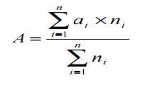
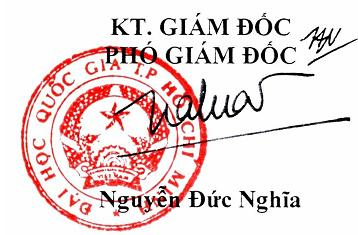

ĐẠI HỌC QUỐC GIA |
CỘNG HÒA XÃ HỘI CHỦ NGHĨA VIỆT NAM Độc lập - Tự do - Hạnh phúc |
Tp. Hồ Chí Minh, ngày 21 tháng 11 năm 2008 |
QUY CHẾ
ĐÀO TẠO ĐẠI HỌC VÀ CAO ĐẲNG THEO HỆ THỐNG TÍN CHỈ
(Ban hành kèm theo Quyết định số 1368 /ĐHQG-ĐH&SĐH ngày 21 tháng 11 năm
2008 của Giám đốc Đại học Quốc gia TP. Hồ Chí Minh)
CHƯƠNG 1
NHỮNG QUY ĐỊNH CHUNG
Điều 1. Phạm vi điều chỉnh và đối tượng áp dụng
1. Quy chế này quy định những vấn đề chung về đào tạo đại học và cao đẳng hệ
chính quy theo hệ thống tín chỉ, bao gồm: tổ chức đào tạo; xử lý học vụ; xét và công
nhận tốt nghiệp; thanh kiểm tra.
2. Từ “các trường” nói trong quy chế này gồm: các trường đại học thành viên và
khoa trực thuộc Đại học Quốc gia Thành phố Hồ Chí Minh (ĐHQG-HCM) có chức
năng đào tạo đại học. Hiệu trưởng các trường, Trưởng Khoa trực thuộc gọi chung là
“Hiệu trưởng”.
3. Quy chế này áp dụng đối với sinh viên các khóa đào tạo hệ chính quy ở trình
độ đại học và cao đẳng. Căn cứ Quy chế này và thực tế đào tạo, các trường xây dựng
Quy chế học vụ kèm theo các hướng dẫn thực hiện để áp dụng cho các khóa đào tạo
đại học chính quy toàn thời gian tại trường mình.Điều 2. Chương trình giáo dục đại học, cao đẳng.
1. Chương trình giáo dục đại học, cao đẳng (sau đây gọi tắt là chương trình giáo
dục) thể hiện mục tiêu giáo dục; chuẩn kiến thức, kỹ năng; phạm vi và cấu trúc nội
dung giáo dục đại học; phương pháp và hình thức đào tạo, cách thức đánh giá kết quả
giáo dục đối với các môn học, ngành học ở mỗi lớp, mỗi trình độ đào tạo; bảo đảm yêu
cầu liên thông với các chương trình giáo dục khác.
2. Chương trình giáo dục được các trường xây dựng trên cơ sở chương trình khung của Bộ
Giáo dục và Đào tạo (Bộ GD&ĐT), hoặc chương trình của các trường đại học tiên tiến trên
thế giới, và theo hướng dẫn chung của ĐHQG-HCM. Chương trình giáo dục được thiết kế
theo hướng đảm bảo liên thông với các trình độ đào tạo và chương trình giáo dục khác, được
xây dựng với sự tham gia của các giảng viên, cán bộ
quản lý, đại diện của các tổ chức, hội nghề nghiệp, cựu sinh viên và các nhà
tuyển dụng lao động theo quy định.Chương trình giáo dục được cấu trúc từ các môn học thuộc hai khối kiến thức:
giáo dục đại cương và giáo dục chuyên nghiệp.
* Khối kiến thức giáo dục đại cương (gồm các môn học thuộc các lĩnh vực khoa
học xã hội, khoa học nhân văn, khoa học tự nhiên) nhằm trang bị cho sinh viên
nền học vấn rộng: có thế giới quan khoa học và nhân sinh quan đúng đắn; hiểu
biết về tự nhiên, xã hội và con người; nắm vững phương pháp tư duy khoa học;
có đạo đức, nhận thức trách nhiệm công dân; có năng lực tham gia xây dựng và
bảo vệ đất nước.
*Khối kiến thức giáo dục chuyên nghiệp được thể hiện theo 2 nhóm kiến thức:
nhóm kiến thức cơ sở (kiến thức cơ sở của ngành hoặc liên ngành) và nhóm
kiến thức chuyên ngành, nhằm cung cấp cho sinh viên những kiến thức và kỹ
năng nghề nghiệp ban đầu cần thiết.
3. Mỗi chương trình có thể gắn với một ngành (kiểu đơn ngành) hoặc với một
vài ngành (kiểu song ngành; kiểu ngành chính - ngành phụ; kiểu 2 văn bằng).
4. Các môn học trong chương trình giáo dục được bố trí giảng dạy học tập theo
một trình tự khoa học. Sinh viên hoàn thành một chương trình giáo dục thì sẽ được
trường xét tốt nghiệp và cấp một văn bằng tương ứng theo Quy chế văn bằng của
ĐHQG-HCM.
5. Tổng số tín chỉ tích lũy tối thiểu (không tính các môn học: Giáo dục Quốc
phòng, Giáo dục Thể chất) yêu cầu đối với các chương trình giáo dục được quy định
như sau:
Bậc đào tạo |
Thời gian thiết kế |
Tổng số tín chỉ tích lũy tối thiểu tham chiếu |
Đại học chính quy |
4,0 năm |
120 tín chỉ |
Đại học chính quy |
4,5 năm |
135 tín chỉ |
Đại học chính quy |
5,0 năm |
150 tín chỉ |
Cao đẳng chính quy |
3,0 năm |
90 tín chỉ |
Điều 3. Chuẩn kiến thức, kỹ năng
1. Chuẩn kiến thức, kỹ năng trong chương trình giáo dục là mức tối thiểu về
kiến thức, kỹ năng mà người học phải đạt được sau khi kết thúc một chương trình giáo
dục.
2. Chuẩn kiến thức, kỹ năng trong chương trình giáo dục là căn cứ để biên soạn
sách giáo khoa, giáo trình, đánh giá kết quả học tập của sinh viên.
3. Chuẩn kiến thức, kỹ năng phải bảo đảm các yêu cầu sau đây:
a) Thể hiện mục tiêu giáo dục đối với từng chương trình giáo dục và được cụ
thể hóa tới từng môn học;
b) Thể hiện kiến thức, kỹ năng mới đáp ứng yêu cầu thực tiễn và hội nhập quốc
tế;
c) Được cụ thể hoá thành các tiêu chí phù hợp, làm cơ sở cho việc xây dựng,
thực hiện, theo dõi, giám sát và đánh giá khách quan chương trình giáo dục.
Trường quy định cụ thể chuẩn kiến thức, kỹ năng và được thể hiện trong
chương trình giáo dục của từng ngành học và cụ thể hóa tới từng môn học.Điều 4. Khóa học, học kỳ và năm học
1. Khóa học theo chương trình giáo dục: là thời gian thiết kế để sinh viên hoàn
thành một chương trình cụ thể và được nhận văn bằng tương ứng của ĐHQG-HCM.
2. Học kỳ
- Học kỳ là một khoảng thời gian nhất định gồm một số tuần dành cho các hoạt
động giảng dạy, học tập, và đánh giá kết quả học tập.
- Học kỳ hè (là học kỳ không bắt buộc) nhằm tạo điều kiện cho sinh viên được
học lại; học bù hoặc học vượt.
3. Năm học gồm 2 học kỳ chính. Mỗi học kỳ chính dài ít nhất 18 tuần bao gồm
các tuần thực học theo thời khóa biểu và các tuần dành riêng cho công tác đánh giá
môn học tập trung – ít nhất là 3 tuần. Ngoài hai học kỳ chính, các trường có thể tổ
chức thêm một kỳ học hè.
Hiệu trưởng các trường quy định thời gian biểu tiến hành các hoạt động học tập
giảng dạy, lịch tổ chức đánh giá trong mỗi học kỳ kể cả các ngày nghỉ lễ, nghỉ hè, nghỉ
tết.
Điều 5. Thời gian tối đa hoàn thành khóa học
1. Thời gian tối đa hoàn thành khóa học bao gồm thời gian thiết kế cho chương
trình giáo dục quy định tại khoản 2, Điều 4, cộng với 2 học kỳ đối với các khóa học
dưới 3 năm; 4 học kỳ đối với các khóa học từ 3 đến 5 năm.
2. Các đối tượng được hưởng chính sách ưu tiên (nhóm ưu tiên 1, nhóm ưu tiên
2) theo quy định tại Quy chế tuyển sinh đại học, cao đẳng hệ chính quy được kéo dài
thêm 2 học kỳ so với quy định kể trên tại khoản 1, 0 của Quy chế này.
Hiệu trưởng các trường căn cứ vào thực tế đào tạo có thể quy định mở rộng thời
gian tối đa của một khóa đào tạo nhưng không được vượt quá 02 lần thời gian thiết kế
cho khóa học theo chương trình giáo dục.
Điều 6. Môn học
1. M ôn học là đơn vị cấu thành chương trình giáo dục, có khối lượng kiến thức
tương đối trọn vẹn, thuận tiện cho sinh viên tích lũy trong quá trình học tập, nội
dung được bố trí giảng dạy trọn vẹn trong một học kỳ.
Đề cương chi tiết của môn học là một phần trong hồ sơ chương trình giáo dục
và bao gồm các thông tin chính như: mục tiêu và yêu cầu chuẩn kiến thức-kỹ năng, nội
dung giảng dạy, tài liệu tham khảo, phương pháp dạy và học môn học, cách đánh giá.
Các thông tin trong đề cương chi tiết được giảng viên phổ biến công khai tới sinh viên
trong buổi học đầu tiên của môn học.
2. Môn học bắt buộc: là môn học chứa đựng những nội dung kiến thức chính yếu
của mỗi chương trình giáo dục và sinh viên phải tích lũy.
3. Môn học bắt buộc theo lựa chọn chuyên ngành hoặc huớng chuyên môn: là
các môn học thuộc chương trình giáo dục chứa đựng những nội dung chính yếu
của ngành và chuyên ngành đào tạo, hướng chuyên môn mà tất cả sinh viên sau
khi lựa chọn hoặc khi vào chuyên ngành đào tạo tương ứng đều bắt buộc phải
hoàn tất, đạt yêu cầu để được xét tốt nghiệp.
4. Môn học tự chọn và nhóm môn học tự chọn: môn học tự chọn là môn học chứa
đựng những nội dung kiến thức cần thiết và sinh viên được tự chọn nhằm đa
dạng hóa hướng chuyên môn, tạo sự mềm dẻo trong chương trình giáo dục. Các
môn học tự chọn có thể được xếp theo từng nhóm, sinh viên phải hoàn tất đạt yêu
cầu một số môn nhất định trong từng nhóm nhằm tích lũy đủ số tín chỉ tối thiểu
quy định cho nhóm môn học tự chọn tương ứng.
5. Môn học tương đương: một hay nhiều môn học được gọi là tương đương với
môn học A của chương trình giáo dục khi chúng có nội dung và thời lượng đáp
ứng được yêu cầu cơ bản nhất của môn học A đó.
6. Môn học thay thế được sử dụng khi một môn học thuộc chương trình giáo dục
thay đổi hoặc điều chỉnh, không còn tổ chức giảng dạy và được thay thế bằng
môn học khác đang còn tổ chức giảng dạy hoặc môn học mới.
7. Môn học tiên quyết: một môn học là tiên quyết đối với môn học A là môn học
mà sinh viên phải theo học và thi đạt mới được theo học môn học A.
8. Môn học song hành: Môn học A là môn học song hành của môn học B, khi
điều kiện bắt buộc để đăng ký học môn học B là sinh viên đã đăng ký học môn
A. Sinh viên được phép đăng ký học môn B vào cùng học kỳ đã đăng ký học
môn A hoặc vào các học kỳ tiếp sau.
9. Các môn học chung (Giáo dục Quốc phòng, Giáo dục Thể chất, Lý luận chính
trị …) là các môn học được giảng dạy và học tập theo quy định của Bộ GD&ĐT
và hướng dẫn của ĐHQG-HCM.
Điều 7. Tín chỉ
T ín chỉ là đơn vị xác định thời gian, khối lượng học tập của sinh viên và khối
lượng giảng dạy của giảng viên.
Một tín chỉ được quy định bằng 15 tiết học lý thuyết, thảo luận hoặc hội thảo
chuyên đề; 30-45 tiết bài tập, thực hành, thí nghiệm hoặc thảo luận; 45-90 giờ thực tập
tại cơ sở; 45-60 giờ làm tiểu luận, bài tập lớn hoặc đồ án, khóa luận tốt nghiệp.
Một tiết học được quy định bằng 50 phút.
Đối với những môn học lý thuyết hoặc thực hành, thí nghiệm, để tiếp thu được
một tín chỉ sinh viên phải dành ít nhất 30 giờ chuẩn bị cá nhân (tự học) và giảng viên
phải dành ít nhất 30 giờ để soạn giáo án, bài tập tình huống, soạn đề cương chi tiết,
chấm bài tập về nhà, bài thi, giải đáp cho sinh viên hoặc phát triển môn học.
Số tiết, số tín chỉ, thời gian tự học, thời gian làm việc của giảng viên, cách đánh
giá môn học được quy định cụ thể trong đề cương chi tiết của từng môn học.
Điều 8. Tín chỉ học phí
T ín chỉ học phí (TCHP) là một đơn vị dùng để lượng hoá chi phí của các hoạt
động giảng dạy tính cho từng môn học. Học phí được xác định căn cứ theo số môn học
mà sinh viên được xếp thời khóa biểu trong học kỳ và bằng tổng số tín chỉ học phí của
các môn học nhân với mức tiền học phí / 1 TCHP. Hiệu trưởng các trường quy định
mức thu học phí cho từng bậc đào tạo và từng hệ đào tạo theo các quy định hiện hành.
Điều 9. Lớp học
a) L ớp sinh viên
Lớp sinh viên là tổ chức tương đối ổn định, tập hợp các sinh viên cùng ngành,
cùng khóa nhằm duy trì các sinh hoạt đoàn thể, các phong trào thi đua, các hoạt động
chính trị-xã hội, văn hóa thể thao và để quản lý sinh viên trong quá trình học tập theo
quy định của trường. Trường và khoa quản lý lớp sinh viên thông qua các cán bộ
chuyên trách, các giáo viên chủ nhiệm và ban cán sự lớp.
b) Lớp môn học
Bao gồm các sinh viên theo học cùng môn học, có cùng thời khóa biểu của môn
học trong học kỳ.
Căn cứ các quy định hiện hành, các trường quy định cụ thể số sinh viên tối đa,
tối thiểu đối với mỗi lớp môn học và quy định về hệ thống trợ giảng.Điều 10. Đánh giá kết quả học tập
Kết quả học tập của sinh viên được đánh giá sau từng học kỳ qua các tiêu chí
sau:
1. Số tín chỉ của các môn học mà sinh viên đăng ký học vào đầu mỗi học kỳ
(gọi tắt là khối lượng học tập đăng ký).
2. Điểm trung bình học kỳ (ĐTBHK) là điểm trung bình có trọng số của các
môn học mà sinh viên đăng ký học và được trường xếp lớp trong học kỳ đó, với
trọng số là số tín chỉ của mỗi môn học tương ứng.
3. Số tín chỉ tích lũy là tổng số tín chỉ của các môn học đã hoàn tất (kể cả các
môn học bảo lưu) từ lúc bắt đầu khóa học đến thời điểm được tính.
4. Điểm trung bình chung tích lũy (ĐTBCTL) là điểm trung bình của các môn
học mà sinh viên đã đăng ký học với trọng số là số tín chỉ của mỗi môn học từ lúc bắt
đầu khóa học đến thời điểm được tính.Điều 11. Niên giám, sổ tay sinh viên
a) Niên giám của trường là tài liệu chính thức giới thiệu cho sinh viên về Đại
học Quốc gia Tp.HCM, về nhà trường, về các chương trình giáo dục.
b) Sổ tay sinh viên là tài liệu chính thức do trường phát hành nhằm cung cấp
thông tin về kế hoạch giảng dạy, về chương trình giáo dục cùng các hướng dẫn cần
thiết giúp sinh viên lập kế hoạch thường kỳ và giải quyết vướng mắc thường gặp.
Điều 12. Ứng dụng công nghệ thông tin trong quản lý
Việc quản lý hồ sơ sinh viên được thực hiện theo Quy định về hồ sơ học sinh,
sinh viên và ứng dụng công nghệ thông tin trong quản lý hồ sơ học sinh, sinh viên
được ban hành kèm theo Quyết định số 58/2007/QĐ-BGDĐT ngày 12 tháng 10 năm
2007 của Bộ trưởng Bộ GD&ĐT.
CHƯƠNG 2
TỔ CHỨC ĐÀO TẠO
Điều 13. Các diện sinh viên
1. Sinh viên chính thức
Sinh viên chính thức là các thí sinh trúng tuyển qua kỳ thi tuyển hoặc xét tuyển
vào hệ chính quy, đã hoàn tất các thủ tục nhập học theo một chương trình giáo dục để
nhận văn bằng của ĐHQG-HCM.
Một số trường hợp đặc biệt cũng được xem xét để thu nhận vào hệ chính quy
tập trung theo các quy định cụ thể của ĐHQG-HCM và Bộ GD&ĐT.
2. Sinh viên dự thính
Các cá nhân có nhu cầu học bổ túc kiến thức một số môn học, có đủ điều kiện
về nhân thân và trình độ, có thể được trường xem xét trở thành sinh viên dự thính.
Sinh viên dự thính được cấp chứng chỉ xác nhận việc theo học các môn học đã
đăng ký nếu thực hiện đầy đủ các quy định về đào tạo của trường. Sinh viên dự thính
không được làm đồ án, khóa luận tốt nghiệp hoặc thi tốt nghiệp để nhận văn bằng.
Sinh viên dự thính phải nộp học phí các môn đăng ký theo học và phải thực
hiện đầy đủ các quy định về đăng ký môn học như sinh viên hệ chính quy.
Hiệu trưởng xem xét và ra quyết định thu nhận cho từng trường hợp cụ thể;
Điều 14. Trách nhiệm của nhà trường, giảng viên, giáo viên chủ nhiệm
(GVCN) và sinh viên
1. Nhà trường
Nhà trường cần cung cấp các thông tin cần thiết để sinh viên xây dựng kế hoạch
học tập cá nhân. Khi sinh viên mới nhập học, nhà trường phải tổ chức cho sinh viên
tìm hiểu về:
- Cơ cấu tổ chức của ĐHQG-HCM; các văn bản của ĐHQG-HCM, của Bộ
GD&ĐT về đào tạo, về công tác sinh viên, và các quy định cụ thể của trường
liên quan đến việc học tập và sinh hoạt rèn luyện của sinh viên;
- Chương trình giáo dục, kế hoạch và quy trình đào tạo của toàn khóa học cho
từng ngành học (Niên giám của trường, Sổ tay sinh viên);
- Danh sách GVCN lớp sinh viên mà sinh viên được bố trí sinh hoạt;
- Các khoản học phí, lệ phí phải nộp;
- Các trách nhiệm và quyền lợi cơ bản của sinh viên.
2. Giáo viên chủ nhiệm
GVCN do Trưởng khoa chỉ định và Hiệu trưởng ra quyết định bổ nhiệm.
GVCN phải có trình độ từ thạc sỹ trở lên và có ít nhất 2 năm công tác tại Khoa.
Nhiệm vụ chính của GVCN:
- Hướng dẫn cho sinh viên việc lập kế hoạch học tập, việc đăng ký môn học,
việc lựa chọn ngành nghề, về rèn luyện nhân cách và các vấn đề xã hội khác.
-Tư vấn cho sinh viên trong việc ăn, ở, sinh hoạt và hướng dẫn sinh viên tham
gia các hoạt động đoàn thể, xã hội.
Hiệu trưởng quy định chế độ giờ trực tối thiểu của GVCN, các nội dung sinh
hoạt bắt buộc mỗi học kỳ, chế độ báo cáo và kinh phí bồi dưỡng cho công tác sinh
viên của khoa và công tác GVCN.
3. Giảng viên
Ngoài việc thực hiện đúng các quy định về nghĩa vụ và quyền hạn của giảng
viên, mỗi giảng viên tham gia giảng dạy phải đảm bảo giờ làm việc cho một tín chỉ
theo đúng quy định tại Điều 7 của Quy chế này.
4. Sinh viên
- Tìm hiểu, nghiên cứu để nắm được kế hoạch học tập, chương trình giáo dục,
và những quy định của nhà trường. Khi cần thiết, sinh viên liên hệ GVCN để
được hướng dẫn giúp đỡ. Một số trường hợp đặc biệt có thể liên hệ trực tiếp
các phòng ban chức năng của trường để giải quyết các vấn đề phát sinh.
- Cần liên hệ thường xuyên với GVCN để được hướng dẫn và duyệt tiến độ
đăng ký học tập qua từng học kỳ.
- Sinh viên có trách nhiệm theo dõi cập nhật kết quả học tập và kết quả đăng ký
môn học của mình.
Căn cứ điều kiện thực tế, các trường quy định cụ thể trách nhiệm của GVCN,
giảng viên, sinh viên.Điều 15.Đăng ký nhập học, sắp xếp sinh viên vào học các chương trình giáo
dục
1. Đăng ký nhập học
a) Sinh viên phải làm thủ tục đăng ký nhập học theo đúng quy định của trường.
Tất cả giấy tờ khi sinh viên nhập học phải được xếp vào túi hồ sơ của từng cá nhân để
quản lý theo quy định tại Điều 12 của Quy chế này.
b) Sinh viên nhập học sẽ được trường cấp Thẻ sinh viên, Thẻ thư viện.
c) Sinh viên tạm dừng, sinh viên diện bảo lưu kết quả trúng tuyển đại học, cao
đẳng phải làm thủ tục nhập học tại trường theo quy định.
2. Sắp xếp sinh viên vào học các chương trình giáo dục hay ngành đào tạo
a) Đối với những trường xác định điểm trúng tuyển hoặc tiêu chí xét tuyển theo
chương trình giáo dục (hoặc theo ngành đào tạo), những thí sinh đạt yêu cầu sẽ được
trường sắp xếp vào học các chương trình giáo dục (hoặc ngành đào tạo) đã đăng ký.
b) Đối với những trường xác định điểm trúng tuyển hoặc tiêu chí xét tuyển theo
khối thi hoặc theo nhóm chương trình (hoặc theo nhóm ngành đào tạo) trong kỳ thi
tuyển hoặc xét tuyển, Hiệu trưởng quy định cụ thể tiêu chí, thời gian cùng quy trình
phân ngành và báo cáo kết quả phân ngành về ĐHQG-HCM chậm nhất 30 ngày sau
khi công bố kết quả.
Điều 16.Đăng ký khối lượng học tập
1. Đăng ký môn học
a) Vào cuối học kỳ trước, các trường thông báo kế hoạch dự kiến cho từng
chương trình trong học kỳ mới, trong đó có đủ các thông tin sau:
-Quy trình cơ bản trong tổ chức học kỳ, kế hoạch thời gian tổ chức đăng ký
môn học, mẫu phiếu đăng ký môn học;
-Thời khóa biểu dự kiến các lớp môn học được mở trong học kỳ tới (tên giảng
viên, phòng học, địa điểm học, số lượng sinh viên được phép đăng ký tối đa
cho mỗi lớp môn học), lịch thi dự kiến cho các lớp môn học;
b) Sinh viên thuộc diện được xét học bổng khuyến khích khi đã đăng ký ít nhất
14 tín chỉ cho học kỳ tương ứng. Sinh viên học vượt tiến độ sẽ được xem xét riêng.
Tùy theo tính chất của ngành nghề đào tạo, Hiệu trưởng quy định số tín chỉ tối đa đối
với sinh viên đang được xếp loại học lực trung bình và đối với những sinh viên đang
trong thời gian bị xếp loại học lực yếu tham gia đăng ký học tại học kỳ chính và học
kỳ phụ của năm học.
c) Trước khi bắt đầu mỗi học kỳ, tùy theo khả năng và điều kiện học tập của
bản thân, sinh viên phải đăng ký học các môn học dự định sẽ học trong học kỳ, kể cả
đăng ký học lại, học cải thiện điểm theo quy định tại khoản 3 của Điều này.
2. Đăng ký bổ sung, điều chỉnh và hủy đăng ký môn học
Trong điều kiện bình thường, sinh viên được phép đăng ký thêm, hủy hoặc điều
chỉnh kết quả đăng ký môn học trong thời gian không quá 2 tuần của học kỳ chính, và
không quá 1 tuần của học kỳ hè. Lịch trình và thủ tục do trường quy định cụ thể.
3. Đăng ký học lại, học cải thiện điểm
a) Đối với các môn học bắt buộc, nếu điểm tổng kết môn học thấp hơn 5, sinh
viên phải đăng ký học lại môn học đó ở một trong các học kỳ tiếp theo cho đến khi đạt điểm 5 trở lên.
Nếu môn học tương ứng không còn mở lớp (do chương trình giáo dục thay đổi)
sinh viên phải đăng ký học và tích lũy các môn học thay thế theo danh mục đã được
trường công bố chính thức. Danh mục môn học thay thế được Trưởng khoa quản lý
chuyên môn duyệt và trình lên trường ra quyết định công bố chính thức.
b) Đối với các môn học tự chọn (nhóm môn học tự chọn)
-Sinh viên phải tích lũy đủ số tín chỉ quy định trong chương trình giáo dục cho
nhóm môn học tự chọn.
- Nếu chưa tích lũy đủ thì phải đăng ký học lại và tích lũy các môn chưa đạt
hoặc các môn khác trong cùng nhóm môn học tự chọn - có mở lớp.
-Nếu đã tích lũy đủ thì không bắt buộc phải đăng ký học lại và tích lũy các
môn học tự chọn chưa đạt (nếu có)
d) Việc đăng ký cải thiện các môn học có kết quả đạt từ điểm 5 trở lên do
trường quy định cụ thể quy trình và thủ tục xử lý. Kết quả cao nhất trong các lần học
sẽ được chọn để tính vào ĐTBCTL. Điểm của tất cả các lần học được lưu đầy đủ trongkết quả học tập của sinh viên.
4. Trường có thể xem xét mở lớp đối với một số môn học không có trong kế
hoạch tổ chức giảng dạy của học kỳ, nhưng có nhiều sinh viên có nhu cầu học.
Tất cả thông tin liên quan đến đăng ký môn học đều phải được thông báo công
khai và kịp thời trên các website của trường.Điều 17.Thang điểm, điểm thành phần, điểm môn học
1) Thang điểm đánh giá: Điểm được cho theo thang điểm 10. Thang điểm hệ 4
chỉ mang tính tham khảo, chuyển đổi khi cần thiết, không dùng để ghi và phân loại kết
quả đánh giá. Thang điểm chính thức hệ 10 cùng cách xếp loại kết quả học tập được
thực hiện theo hướng dẫn sau.
Ngoài các điểm từ 0 tới 10, các trường có thể sử dụng các điểm đặc biệt sau
trong bảng điểm của sinh viên:
trong bảng điểm ghi
số hoặc chữ viết tắt
tham khảo
(thang 4)
bảo lưu và không tính vào
ĐTBHK
Trường quy định cụ thể quy trình xét và công bố các điểm cấm thi, miễn học
đồng thời cụ thể hóa các loại điểm đặc biệt khác để phục vụ cho việc vận hành học vụ bao gồm:
Điểm chữ tham khảo
(thang 4)
thức
chưa tích lũy
Mbảng điểm học kỳ,
chờ điểm miễn (hệ
hoàn toàn trong dữ
liệu điểm sau
2) Điểm thành phần
Kết quả học tập một môn học được đánh giá theo quá trình học tập, thể hiện bởi
các điểm thành phần. Số lượng điểm thành phần, trọng số từng cột điểm và phương
thức đánh giá điểm từng thành phần được quy định trong đề cương chi tiết của từng
môn học. Điểm thành phần có thể được làm tròn tới 0,5.
3) Điểm môn học
Điểm cuối cùng dùng để đánh giá một môn học được gọi là điểm tổng kết môn
học hay điểm môn học (sau đây gọi chung là điểm môn học). Điểm môn học là điểm
đánh giá kết quả học tập toàn diện của sinh viên trong suốt học kỳ đối với môn học đó,có thể được làm tròn tới 0,5.
Việc quy tròn điểm được thực hiện theo nguyên tắc: Nếu điểm thi, điểm thành
phần, điểm môn học có điểm lẻ dưới 0,25 thì quy tròn thành 0,0; có điểm lẻ từ 0,25
đến dưới 0,75 thì quy tròn thành 0,5; có điểm lẻ từ 0,75 đến dưới 1,0 thì quy tròn thành
1,0.
Điều 18. Tổ chức đánh giá môn học
1. Tùy tính chất môn học, việc đánh giá môn học có thể căn cứ vào một phần
hoặc tất cả các điểm thành phần. Mỗi môn học có thể có nhiều kỳ kiểm tra nhưng chỉ
tổ chức một kỳ kiểm tra chính vào giữa học kỳ và một kỳ thi kết thúc môn học vào
cuối học kỳ. Không có kỳ kiểm tra lại hoặc kỳ thi lại cho những sinh viên đã dự thi
không đạt yêu cầu hoặc vắng thi.
2. Điểm môn học có thể bao gồm các điểm thành phần sau:
- Điểm kiểm tra giữa kỳ;
- Điểm đánh giá quá trình, mức độ tham gia hoạt động giảng dạy học tập;
- Điểm thực hành của từng bài/ phần thí nghiệm, hay thi thí nghiệm;
- Điểm bài tập lớn, tiểu luận;
- Điểm thi cuối kỳ;
- Điểm bảo vệ thực tập, đồ án môn học, đồ án/ khóa luận tốt nghiệp.
- Điểm từ các cơ sở thực tập (doanh nghiệp).
Căn cứ chuẩn kiến thức, kỹ năng đối với từng chương trình giáo dục, từng môn
học, Hiệu trưởng quy định tỉ lệ của các điểm thành phần và được thể hiện trong đề
cương môn học.
3. Vắng mặt khi lên lớp:
- Nếu không đủ điểm thành phần theo quy định, sinh viên sẽ bị cấm dự thi cuối
học kỳ và phải nhận điểm không (0) cho môn học đó.
-Nếu vắng mặt (có và không có lý do) quá 20% số giờ thực hành (bài tập, thí
nghiệm, seminair, ...) hoặc 50% số kỳ kiểm tra trong học kỳ, sinh viên sẽ bị
điểm không (0) cho môn học thí nghiệm và cho phần kiểm tra của môn học
đó.
4. Tổ chức thi kết thúc môn học
a) Cuối mỗi học kỳ, các trường tổ chức một kỳ thi chính.
b) Hình thức thi kết thúc môn học có thể là thi viết (trắc nghiệm hoặc tự luận),
vấn đáp, viết tiểu luận, làm bài tập lớn, hoặc kết hợp giữa các hình thức trên. Hiệu
trưởng hoặc Trưởng khoa quản ngành duyệt các hình thức thi và kiểm tra thích hợp
căn cứ vào đề nghị của giảng viên phụ trách môn học.
c) Đề thi do giảng viên phụ trách môn học, hoặc do những giảng viên có cùng
chuyên môn chuẩn bị, hoặc lấy từ ngân hàng đề thi, phải phù hợp với nội dung môn
học đã quy định trong chương trình. Hiệu trưởng quy định quy trình ra đề thi.
d) Việc kiểm tra từng phần môn học do giảng viên trực tiếp thực hiện và thông
báo tại lớp.
e) Điểm kiểm tra và điểm thi kết thúc môn học phải được trường thông báo cho
sinh viên không chậm hơn 20 ngày sau ngày thi kết thúc môn học.
f) Chấm phúc tra, điều chỉnh kết quả thi: Sinh viên có quyền đề nghị chấm phúc
tra kết quả thi. Đơn xin phúc tra kết quả thi, kiểm tra nộp trong vòng 05 ngày kể từ
ngày công bố kết quả.
Việc tổ chức giảng dạy các môn học chung trong toàn ĐHQG-HCM được thực
hiện theo quy định riêng do Giám đốc ĐHQG-HCM ban hành.
Hiệu trưởng quy định cụ thể việc tổ chức thi kết thúc môn học, chấm thi, chấm
phúc tra và xử lý điểm sau chấm phúc tra, việc bảo quản, lưu giữ các bài thi, tiểu luận,bài tập lớn (gọi chung là bài thi).
5. Thông báo kết quả
Mỗi học kỳ, kết quả điểm của các môn học trong học kỳ, ĐTBHK và ĐTBCTL
tính đến hết học kỳ đó phải được trường thông báo cho sinh viên.
Trong quá trình học, sinh viên có thể đề nghị trường cấp hoặc gửi bảng điểm
đến nơi cần thiết theo yêu cầu của sinh viên. Để thực hiện công việc này, sinh viên
phải làm đơn và nộp lệ phí. Mức lệ phí do trường quy định.
Điều 19. Cách tính điểm trung bình
Điểm trung bình học kỳ và điểm trung bình chung tích lũy được tính theo thang
điểm 10, được làm tròn đến 2 chữ số thập phân và được tính theo công thức sau:

Trong đó:
+ A là ĐTBHK hoặc ĐTBCTL
+ ai là điểm của môn học thứ i
+ ni là số tín chỉ của môn học thứ i
+ n là tổng số môn học.
ĐTBHK được dùng để xét học bổng, khen thưởng sau mỗi học kỳ, được tính
theo kết quả điểm môn học ở lần học thứ nhất.
ĐTBHK và ĐTBCTL được dùng để xét phân loại kết quả học tập, xử lý học
vụ và xếp hạng tốt nghiệp, được tính theo điểm môn học cao nhất trong các
lần học.
Điểm X (miễn học - bảo lưu) và các điểm đặc biệt khác không được tính trong
ĐTBHK.
Điều 20. Xếp hạng học lực
Sau mỗi học kỳ, căn cứ vào số tín chỉ tích lũy và ĐTBCTL, sinh viên được xếp
hạng học lực như sau:
a) Hạng bình thường: Nếu tích lũy đủ số tín chỉ quy định và ĐTBCTL đạt từ
5,00 trở lên.
b) Hạng yếu: Nếu không tích lũy đủ số tín chỉ quy định và ĐTBCTL đạt dưới
5,00, nhưng chưa rơi vào trường hợp bị đình chỉ học tập.
CHƯƠNG 3
XỬ LÝ HỌC VỤĐiều 21. Cảnh cáo học vụ
Hằng năm, trường sẽ tiến hành xử lý học vụ sau học kỳ 1 và sau học kỳ hè. Kết
quả học tập của học kỳ hè sẽ được tính chung vào kết quả học tập học kỳ 2 của năm
học tương ứng để xem xét xử lý học vụ.
Sinh viên vi phạm một trong các quy định sau sẽ bị cảnh cáo học vụ:
-Không hoàn thành nghĩa vụ học phí theo quy định của trường.
-Không đạt số tín chỉ tối thiểu do trường quy định cho ngành đào tạo trong một
học kỳ;
-Có ĐTBCTL trong học kỳ đầu dưới 3,0 hoặc ĐTBCTL của 2 học kỳ liên tiếp
dưới 4,0.
Thời hạn cảnh cáo học vụ kéo dài trong một học kỳ chính tiếp theo. Sinh viên
sẽ được xóa tên trong danh sách cảnh cáo học vụ trước thời hạn, nếu có kết quả học
tập ở cuối học kỳ kế không vi phạm Điều 22.Điều 22. Đình chỉ học tập và xóa tên khỏi danh sách sinh viên
1. Trường sẽ xóa tên khỏi danh sách sinh viên nếu sinh viên gửi đơn xin thôi
học và được Trường ra quyết định cho phép nghỉ học.
2. Trường sẽ ra quyết định đình chỉ học tập và xóa tên khỏi danh sách sinh viên
nếu sinh viên vi phạm một trong các trường hợp sau:
- Đã hết thời gian tối đa hoàn thành khóa học;
- Đã tự ý bỏ học từ một học kỳ chính trở lên – có ĐTBHK bằng 0 (không) ở
một học kỳ chính;
-Sau thời hạn bị cảnh cáo học vụ vẫn vi phạm các quy định của Điều 21;
-Vi phạm quy chế học vụ và các quy định khác của trường đến mức buộc thôi
học;
-Bị kỷ luật vì lý do đi thi hộ hoặc nhờ người thi hộ.
- Một số trường hợp đặc biệt khác do Hiệu trưởng quy định cụ thể.
Khi sinh viên có quyết định đình chỉ học tập, trường thông báo trả sinh viên về
địa phương nơi sinh viên có hộ khẩu thường trú.
Sinh viên thuộc diện bị đình chỉ học tập, nếu có nguyện vọng chuyển trường
hay chuyển xuống các bậc đào tạo thấp hơn phải làm đơn để trường xét cụ thể từng
trường hợp.Điều 23. Tạm dừng học tập
1. Sinh viên được quyền tạm dừng học tập và được bảo lưu kết quả đã học trong các
trường hợp sau:
- Được điều động vào các lực lượng vũ trang;
-Bị ốm hoặc tai nạn phải điều trị thời gian dài, có giấy xác nhận của cơ quan y
tế;
-Trường hợp vì lý do cá nhân, sinh viên phải học ít nhất một học kỳ ở trường,
không rơi vào các trường hợp bị đình chỉ học tập được quy định tại Điều 22
của Quy chế này.
2. Ngoại trừ tạm dừng học tập do thi hành nghĩa vụ quân sự thì thời gian tạm dừng
vì các lý do khác đều được tính vào thời gian tối đa hoàn thành khóa học được
quy định tại Điều 5 của Quy chế này. Sinh viên không được tạm dừng quá 2 học
kỳ chính liên tiếp.
3. Sinh viên tạm dừng học tập, khi muốn trở lại học tiếp tại trường, phải hoàn
tất thủ tục nhập học theo quy định của trường.Điều 24. Học tiếp ngành thứ 2
1. Sinh viên đã đạt tiêu chuẩn cấp bằng theo ngành thứ nhất, nếu có nguyện
vọng và còn thời gian học theo Điều 5 của Quy chế này thì được phép đăng ký học để
nhận bằng tốt nghiệp thứ 2 trong cùng nhóm chương trình (nhóm ngành, nhóm nghề)
giáo dục, đào tạo.
2. Khi học tiếp ngành thứ 2, sinh viên được bảo lưu điểm của các môn học có
nội dung và khối lượng kiến thức tương đương có trong chương trình thứ nhất. Tất cả
các môn học mà sinh viên đã học đều được ghi vào bảng điểm, nhưng việc phân loại
và xếp hạng tốt nghiệp chỉ căn cứ vào các môn học có trong chương trình giáo dục của ngành tương ứng.Điều 25. Chuyển trường, chuyển ngành học
1. Điều kiện để xét chuyển trường
a) Sinh viên được chuyển trường nếu đồng thời thỏa các điều kiện sau:
-Không thuộc một trong các trường hợp không được phép chuyển trường quy
định tại khoản 1b của Điều này.
-Sinh viên có các khó khăn khách quan - đột xuất không thể tiếp tục theo học
tại trường đang học. Lý do có thể là: gia đình bắt buộc phải chuyển chỗ ở từ
nơi có trường đang theo học về một tỉnh thành khác; tình trạng sức khoẻ
không cho phép theo học xa nhà hay theo học ngành đang học; kinh tế gia
đình quá khó khăn có xác nhận của địa phương. Hiệu trưởng trường tiếp nhận
quy định chi tiết các điều kiện, các yêu cầu bổ sung để được tiếp nhận vào học
tại trường.
-Sinh viên xin chuyển sang trường có cùng ngành đào tạo hoặc trong cùng
cùng nhóm ngành với ngành đào tạo mà sinh viên đang học – không hạn chế
nếu chuyển xuống một bậc hay một cấp độ đào tạo thấp hơn.
-Sinh viên được sự chấp nhận của Hiệu trưởng trường xin chuyển đi và trường
tiếp nhận. Hiệu trưởng quy định chi tiết các điều kiện để sinh viên được tiếp
nhận vào học tại trường (trường tiếp nhận).
b) Sinh viên không được phép chuyển trường trong các trường hợp sau:
- Sinh viên đã tham dự kỳ thi tuyển sinh theo đề thi chung, nhưng không trúng
tuyển vào trường-ngành hoặc có kết quả thi thấp hơn điểm trúng tuyển của
trường-ngành xin chuyển đến;
-Sinh viên không đạt yêu cầu xét tuyển đầu vào đối với khóa tuyển sinh tương
ứng của trường, ngành xin chuyển đến;
-Sinh viên thuộc diện nằm ngoài vùng tuyển quy định của trường chuyển đến;
- Đang là sinh viên năm thứ nhất hoặc khi đã vào học học kỳ cuối cùng trong
thời gian cho phép quy định tại Điều 5 của Quy chế này
-Sinh viên đang trong thời gian bị kỷ luật từ cảnh cáo trở lên;
c) Thủ tục chuyển trường:
-Sinh viên phải làm đơn xin chuyển trường, kèm minh chứng để xin ý kiến
đồng ý của Hiệu trưởng trường sẽ tiếp nhận – có ghi rõ các điều kiện kèm theo
(nếu có).
-Nếu được trường tiếp nhận đồng ý, sinh viên chuyển đơn cùng toàn bộ hồ sơ
cho trường xin chuyển đi. Hiệu trưởng trường chuyển đi ra quyết định cho
chuyển trường, cấp bảng điểm và xác nhận hồ sơ cho sinh viên theo yêu cầu
của trường tiếp nhận.
-Hiệu trưởng trường tiếp nhận ra quyết định thu nhận sinh viên, công nhận các
môn học được miễn học trên cơ sở đề xuất của khoa chuyên ngành khi so sánh
các môn học đã đạt trong bảng điểm của trường cũ và chương trình giáo dục
của ngành mà sinh viên chuyển vào học;
-Mẫu hồ sơ xin chuyển trường được trình bày ở phụ lục 1.
2. Chuyển ngành học:
Đối với các trường xây dựng điểm trúng tuyển hoặc tiêu chí xét tuyển theo
nhóm ngành, theo khối thi thì việc xét chuyển đổi ngành học do Hiệu trưởng quy định.
Việc xét chuyển đổi ngành học không áp dụng đối với các trường tuyển sinh
theo ngành. Riêng các chương trình chất lượng cao, tài năng, tiên tiến có các quy định
đặc biệt cho phép chuyển ngành vào và ra theo từng học kỳ, từng đợt.
Tùy điều kiện cụ thể, Hiệu trưởng trường xem xét và ra quyết định công nhận
việc chuyển ngành, nhưng phải bảo đảm các nguyên tắc sau:
a) Chuyển ngành học trong phạm vi trường quản lý.
Sinh viên được chuyển ngành học khác nếu thoả các điều kiện sau:
- Không thuộc một trong các trường hợp quy định tại khoản 1b của Điều này.
- Chuyển sang ngành học khác trong cùng nhóm ngành đào tạo.
- Đã tích lũy đủ số tín chỉ tối thiểu quy định cho mỗi học kỳ và có ĐTBCTL từ
6,50 trở lên.
- Được sự chấp thuận của Trưởng khoa quản ngành (chuyển đến và chuyển đi)
và Hiệu trưởng.
b) Nếu sinh viên có nhu cầu chuyển ngành học giữa các trường trong ĐHQG-
HCM, thì phải thỏa các điều kiện quy định tại khoản 2a của Điều này, quy định riêng
của mỗi trường và phải được sự đồng ý của cả hai Hiệu trưởng trường tiếp nhận và
trường chuyển đi. Thủ tục tương tự như đã nêu tại khoản 1c của Điều này.
c) Đối với sinh viên theo học các chương trình liên kết với nước ngoài có nhu cầu
chuyển đổi sang chương trình khác trong cùng một ngành học phải thoả các điều kiện sau:
- Không thuộc một trong các trường hợp quy định tại khoản 1b của Điều này.
- Không đang trong giai đoạn học ngoại ngữ để đạt trình độ theo quy định.
- Đã tích lũy đủ số tín chỉ tối thiểu quy định cho mỗi học kỳ và có ĐTBCTL từ 6,50
trở lên.
- Được bảo lưu kết quả học tập của những môn học được xét là môn học tương
đương và điểm môn học đạt từ 5,0 điểm trở lên.
- Ngành học còn chỉ tiêu đào tạo.
4. Thời gian tối đa được phép học đối với sinh viên được chuyển đổi ngành học là
thời gian tối đa hoàn thành khóa học được quy định tại Điều 5 của Quy chế này.
CHƯƠNG 4
XÉT VÀ CÔNG NHẬN TỐT NGHIỆPĐiều 26.Thực tập cuối khoá, làm đồ án hoặc khóa luận tốt nghiệp
1. Môn học thực tập cuối khoá là môn học tiên quyết trước khi sinh viên đăng ký làm
đồ án, khóa luận tốt nghiệp, được bố trí vào học kỳ cuối của chương trình giáo dục.
2. Vào đầu học kỳ cuối của chương trình giáo dục, sinh viên được đăng ký làm đồ án,
khóa luận tốt nghiệp hoặc học thêm một số môn học chuyên môn được quy định như sau:
a) Làm đồ án, khóa luận tốt nghiệp: áp dụng cho những sinh viên đạt mức quy định
của trường. Đồ án, Khóa luận tốt nghiệp là môn học có khối lượng 10 tín chỉ cho bậc đại
học và 05 tín chỉ cho bậc cao đẳng, được áp dụng trong toàn ĐHQG-HCM.
b) Sinh viên không đủ điều kiện làm đồ án, khóa luận tốt nghiệp phải đăng ký học
thêm một số môn học chyên môn có khối lượng là 10 tín chỉ cho bậc đại học và 05 tín chỉ
cho bậc cao đẳng. Các môn học này được trường công bố muộn nhất vào đầu học kỳ cuối của chương trình giáo dục.
3. Hiệu trưởng quy định:
Về môn học thực tập cuối khoá; các môn chuyên môn cho sinh viên không đủ điều
kiện làm đồ án hoặc khóa luận tốt nghiệp;
Điều kiện để sinh viên được giao làm đồ án, khóa luận tốt nghiệp;
Hình thức và thời gian làm đồ án, khóa luận tốt nghiệp;
Yêu cầu đối với cán bộ hướng dẫn đồ án, khóa luận tốt nghiệp;
Điều 27. Chấm đồ án, khóa luận tốt nghiệp
1. Đồ án, khóa luận tốt nghiệp không được bảo vệ trước hội đồng tốt nghiệp nếu bị
rơi vào một trong các trường hợp sau:
- Điểm của người hướng dẫn dưới 5; hoặc
-Tất cả các điểm chấm phản biện dưới 5;
2. Việc chấm đồ án, khóa luận tốt nghiệp được thực hiện bởi các Hội đồng do Hiệu
trưởng ký quyết định thành lập.
3. Điểm đánh giá đồ án, khóa luận tốt nghiệp là trung bình cộng của các điểm được
cho bởi các thành viên trong hội đồng, người phản biện và người hướng dẫn, có thể có trọngsố hợp lý và phải được công bố sau mỗi buổi bảo vệ.
4. Điểm đồ án, khóa luận tốt nghiệp; điểm thi các môn học chuyên môn được tính
vào ĐTBCTL của toàn khóa học.
5. Sinh viên có đồ án, khóa luận tốt nghiệp bị điểm dưới điểm 5, phải đăng ký học lại
các môn học chuyên môn tương đương với số tín chỉ của đồ án, khóa luận tốt nghiệp với các khóa kế tiếp hoặc đợt sau.
Hiệu trưởng quy định các yêu cầu đối với cán bộ chấm phản biện, các thành viên Hội
đồng.Điều 28.Điều kiện được công nhận tốt nghiệp
1. Sinh viên được công nhận tốt nghiệp nếu hội đủ các điều kiện sau đây:
Được công nhận là sinh viên hệ chính quy của trường theo đúng ngành cấp bằng tốt
nghiệp;
-Hoàn tất chương trình giáo dục và tích lũy đủ số tín chỉ quy định của ngành đào tạo
(gồm đồ án, khóa luận tốt nghiệp, thi các môn chuyên môn thêm tương đương với
số tín chỉ của đồ án, khóa luận tốt nghiệp), không có môn học nào đạt điểm dưới 5
và có ĐTBCTL không dưới 5.
- Đạt chuẩn trình độ ngoại ngữ theo quy định của ĐHQG-HCM và của trường.
-Tại thời điểm xét tốt nghiệp, sinh viên không bị truy cứu trách nhiệm hình sự hoặc
không bị kỷ luật từ mức đình chỉ học tập.
2. Mỗi học kỳ chính, Hội đồng xét tốt nghiệp của trường sẽ xem xét danh sách những
sinh viên đủ điều kiện tốt nghiệp để Hiệu trưởng ra quyết định công nhận tốt nghiệp.
3. Sinh viên còn nợ các môn học: Giáo dục Quốc phòng, Giáo dục Thể chất nhưng đã
hết thời gian tối đa được phép học, trong thời hạn 5 năm tính từ ngày phải ngừng học, được
trở về trường để hoàn tất môn học để có đủ điều kiện xét tốt nghiệp.
4. Sinh viên không đủ điều kiện cấp bằng tốt nghiệp và đã hết thời gian tối đa được
phép học thì được cấp giấy chứng nhận về các môn học đã học trong chương trình giáo dục của trường.
Điều 29.Cấp và quản lý văn bằng tốt nghiệp
1. Việc cấp và quản lý văn bằng tốt nghiệp được thực hiện theo Quy chế văn bằng
của ĐHQG-HCM. Hiệu trưởng chịu trách nhiệm về danh sách những người được cấp bằng của trường mình.
2. Loại tốt nghiệp được xác định căn cứ vào ĐTBCTL của các môn học quy định cho
ngành đào tạo. Cách phân loại được thực hiện theo quy định tại khoản 1, Điều 17.
3. Xếp hạng tốt nghiệp được căn cứ vào ĐTBCTL và được xếp từ cao xuống thấp
cho từng ngành hoặc nhóm ngành.
4. Đối với loại xuất sắc, nếu rơi vào một trong các trường hợp sau thì loại tốt nghiệp
thành loại giỏi:
-Thời gian học tại trường của sinh viên vượt quá một học kỳ so với thời gian thiết
kế.
-Số tín chỉ học lại vượt quá 5% tổng số tín chỉ quy định cho toàn chương trình.
- Đã bị kỷ luật trong thời gian học từ mức cảnh cáo cấp trường trở lên.
5. Kết quả học tập của sinh viên theo từng môn học được ghi vào bảng điểm kèm
theo bằng tốt nghiệp. Trong bảng điểm có ghi xếp hạng tốt nghiệp của sinh viên, tên chuyên ngành hoặc chuyên môn phụ nếu có. Văn bằng tốt nghiệp d9ại học và bảng điểm kèm theo sẽ được cấp cho sinh viên ngay sau khi Trường công bố quyết định tốt nghiệp.
CHƯƠNG 5
THANH TRA, KIỂM TRA, GIẢI QUYẾT KHIẾU NẠI, TỐ CÁO
VÀ XỬ LÝ VI PHẠMĐiều 30. Thanh tra, kiểm tra
Các trường có trách nhiệm tổ chức kiểm tra, giám sát công tác đào tạo của trường
mình.ĐHQG-HCM thực hiện thanh tra, kiểm tra công tác đào tạo của trường theo các quy định hiện hành. Kết luận thanh tra, kiểm tra và các kiến nghị (nếu có) sẽ được ĐHQG-HCM thông báo cho trường bằng văn bản, là một trong các tiêu chí phân bổ chỉ tiêu tuyển mới, xét duyệt mở ngành đào tạo mới.Điều 31. Khiếu nại, tố cáo
Các cơ quan, tổ chức, cá nhân có quyền khiếu nại, tố cáo về hoạt động vi phạm quy
chế của trường, về gian lận của sinh viên, về sai phạm trong thực hiện chương trình giáo dục, về quá trình tổ chức và quản lý đào tạo. Việc giải quyết khiếu nại tố cáo được thực hiện theo quy định của Luật khiếu nại, tố cáo.
Điều 32.Xử lý vi phạm
1. Xử lý sinh viên vi phạm các quy định về thi, kiểm tra môn học, làm đồ án, khóa
luận tốt nghiệp.
a) Mức độ sai phạm và khung xử lý kỷ luật đối với sinh viên và cán bộ vi phạm được
thực hiện theo Quy chế tuyển sinh vào đại học, cao đẳng hệ chính quy.
b) Trong khi kiểm tra thường kỳ, thi kết thúc môn học, thi cuối khóa, bảo vệ đồ án,
khóa luận tốt nghiệp nếu vi phạm quy chế, sinh viên sẽ bị xử lý đối với từng môn học đã vi phạm. Sinh viên đi thi hộ hoặc nhờ người thi hộ đều bị kỷ luật ở mức đình chỉ học tập và xóa tên khỏi danh sách sinh viên.
2. Xử lý vi phạm trong tổ chức, quản lý đào tạo
Cá nhân hoặc tổ chức vi phạm một trong các hành vi vi phạm Quy chế này, tùy theo
tính chất, mức độ vi phạm mà bị xử lý kỷ luật, xử phạt hành chính hoặc truy cứu trách
nhiệm hình sự, nếu hành vi vi phạm gây thiệt hại thì phải bồi thường theo quy định của pháp
luật.